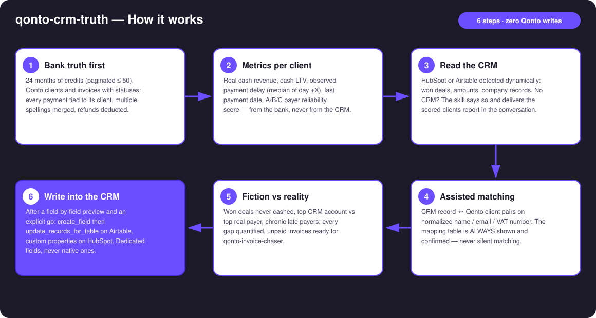
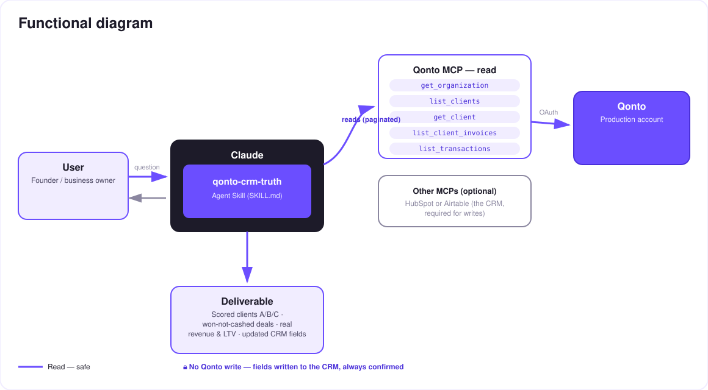

The CRM that stops lying — the bank as the source of truth, written into HubSpot or Airtable.
In every CRM, a deal marked "Closed Won" looks like revenue. Until the money hits the account, it's fiction — and sales teams prioritize on numbers the bank never confirmed. The skill reconciles CRM records (HubSpot or Airtable) with the Qonto account:
Every won deal with no matching euro on the account — listed with amount, age and CRM record.
Cash actually collected (not declared), cash LTV, the observed "pays at day +X" delay, the last payment date.
Computed from bank data, formula disclosed — never a guessed score (< 2 paid invoices → unrated).
HubSpot custom properties / Airtable columns — after confirmed matching and an approved preview, never silent.
Would someone use this on a Monday morning? It's the sales pipeline review — with the bank's numbers.
| Prerequisite | Detail | Required |
|---|---|---|
| Qonto production account | Adapts to any organization — get_organization first, nothing hardcoded | ✅ |
| Country | Universal — no local tax rule involved: identical for all Qonto countries (FR, DE, ES, IT, AT, NL, BE, PT) | ℹ️ detected |
| Qonto MCP connected | Official connector (claude.ai / Claude Desktop), OAuth login | ✅ |
| HubSpot or Airtable MCP | The CRM — required for writes. Without it: degraded mode, a "Qonto clients, scored" report in the conversation | ⭕ required for writes |
| Client invoices in Qonto | Anchor delays and matching; without them, counterparty-level analysis of credits, stated as such | ⭕ recommended |
| ≥ 6 months of history | Below that: honest degradation (unrated scores + warning) | ⭕ |


Zero bank writes: on the Qonto side the skill is pure read — it cannot touch money. The only writes target the CRM, behind two locks: the CRM-record ↔ Qonto-client matching, always shown and confirmed (never silent), then the exact preview of every value, explicitly approved in the conversation.
| Score | Definition |
|---|---|
| A | Median settlement within 5 days of the due date, nothing currently overdue |
| B | Always pays, but late — median lateness ≤ 30 days past due |
| C | Median lateness > 30 days, or an invoice unpaid > 60 days, or a won deal never cashed |
| — | Fewer than 2 paid invoices → unrated (never a guessed score) |
⚠️ The score describes payment behavior observed on this account — not general creditworthiness; restated in every report.
| Field | Content | Example (invented) |
|---|---|---|
| Real revenue (bank) | Cash collected over the period | €24,300 |
| LTV (bank) | All-time collected cash | €61,750 |
| Avg payment delay | Median of day +X (issue → settlement) | day +38 |
| Payer score | A / B / C / unrated | C |
| Last payment | Date of the last attached credit | 2026-05-12 |
| Won not cashed | Flag + cumulated amount | ⚠️ 2 deals · €9,800 |
On Airtable: create_field for missing columns, then update_records_for_table in batches. On HubSpot: equivalent custom properties. CRM-native fields are never overwritten.
| Output | Format | When |
|---|---|---|
| Conversation reply | Markdown tables: scored clients, won-not-cashed deals, mapping table, write-back summary | Always — the baseline |
| CRM write-back | HubSpot custom properties / Airtable columns (dedicated fields) | After confirmed matching + explicit go |
| HTML one-pager | CRM ranking vs bank ranking side by side, score distribution | When the host renders files; automatic fallback to tables otherwise |
The ≤ 3-minute demo attached to the PR walks through: the CRM lie → bank truth & confirmed matching → scores and gaps → the write-back after confirmation → degraded mode without a CRM. All demo records are invented. The detailed shooting script is kept internal (outside the repo).
| Idea | Effort | Note |
|---|---|---|
Chase won-but-never-cashed deals via qonto-invoice-chaser | Low | Natural cross-skill — one discovers, the other acts |
Payer score at quote time (list_quotes) | Medium | Warn before signing a C payer — the truth when it matters most |
| Score history (dated column) | Low | Spot clients drifting from A to C; same write guardrail |
| More CRMs (Notion, Salesforce…) via dynamic detection | Medium | Same logic: read, match, confirm, write |